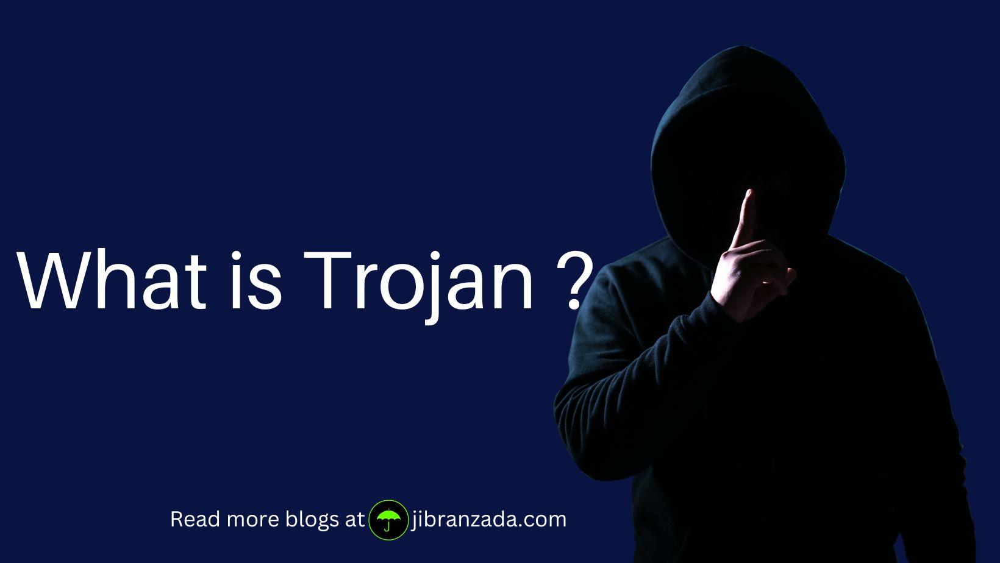

What is Trojan ?
Introduction:
In the world of cybersecurity, there are several types of malware that can harm your computer or device. One of the most common types of malware is called a Trojan or Trojan horse. In this blog, we'll define what a Trojan is, how it works, and how you can protect yourself from this threat.
Definition:
A Trojan is a type of malware that is disguised as a legitimate file or program. It is named after the Trojan horse of Greek mythology because, like the wooden horse, it appears harmless on the outside but contains a harmful payload inside. Trojans can be designed to look like software updates, games, or other files that users are likely to download or open.
Explanation:
When a user downloads or opens a Trojan, it can perform various harmful actions on their computer or device. Some Trojans are designed to steal sensitive information, such as usernames, passwords, and credit card numbers. Others may create backdoors that allow hackers to access the infected system remotely. Trojans can also delete files, modify system settings, or download additional malware onto the infected device.
Key points:
● Trojans are a type of malware that are disguised as legitimate files or programs
● They can steal sensitive information, create backdoors for hackers, delete files, or modify system settings
● Trojans can be spread through email attachments, downloads, or compromised websites
● They are often difficult to detect and remove
How to Be Secure from Trojans:
Protecting your computer or device from Trojans requires a combination of proactive measures and common sense. Here are some tips to help you stay safe:
1. Use antivirus software: A good antivirus program can detect and remove Trojans before they can do any damage. Make sure to keep your antivirus software up to date to ensure the best protection.
2. Be cautious of downloads: Only download files and programs from trusted sources. Avoid downloading anything from unverified websites or suspicious emails.
3. Keep your software up to date: Software updates often contain security patches that can fix vulnerabilities that Trojans can exploit. Make sure to install updates for your operating system and applications regularly.
4. Use strong passwords: Trojans can steal passwords to gain access to sensitive information. Use strong, unique passwords for all your accounts and consider using a password manager to keep them organized
5. Don't click on suspicious links: Avoid clicking on links in emails or websites that seem too good to be true or ask for personal information. These may be phishing scams that can lead to a Trojan infection.
Pro Tip
If you suspect that your computer or device has been infected with a Trojan, take action immediately. Disconnect from the internet, run a full system scan with your antivirus software, and seek professional help if necessary.
Conclusion:
A Trojan may be disguised as a harmless file or program, but it can cause serious harm to your computer or device. By following the tips outlined in this blog, you can reduce your risk of infection and keep your data and devices safe. Stay vigilant, stay secure